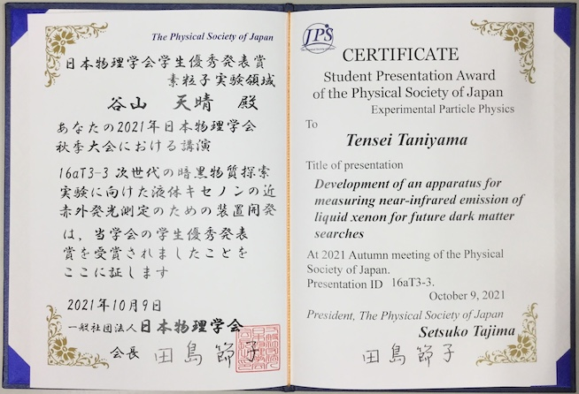
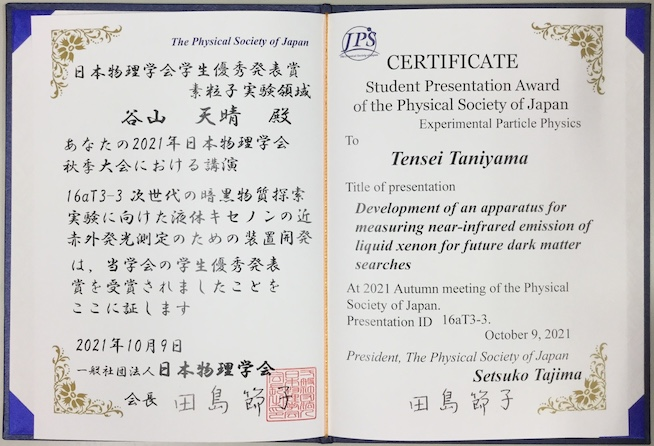
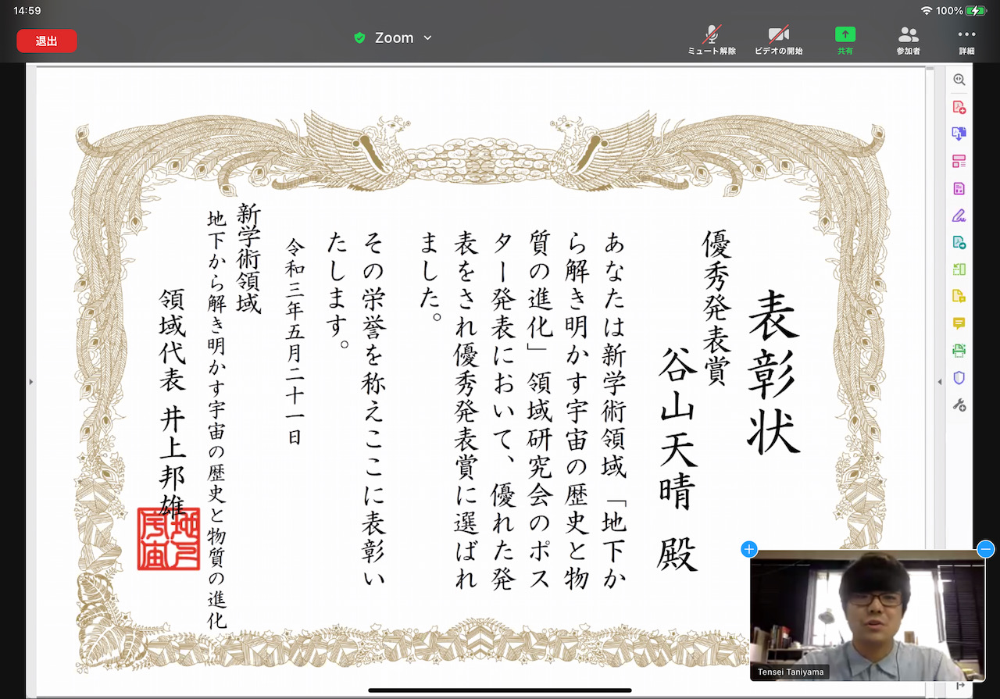

Update : 4 Jan. 2023
Update : 4 Jan. 2023中村研ニュース（2021年度）
更新中です．．．
修士生１名と学部生５名が修了・卒業［2022年3月］
3月24日（木）に証書の授与式が行なわれ，中村研も修士生１名と学部生５名が無事に修了・卒業して学位が授与されました。 修了・卒業したメンバーは次の通りで，卒業した４年生のうち４人はそのまま進学して中村研に残ります。- 修士修了
- 前田 尚哉
- 学部卒業
- 出石 汐里，神長 香乃，熊崎 慎太朗，郷原 康司，森 拓理
D3の藤野とD1の谷山が日本物理学会で登壇［2022年3月］
3月15日（火）から19日（土）まで，日本物理学会第77回年次大会がオンラインで開催され，2日目の16日の午前中に博士課程後期３年の藤野が，また同日午後に博士課程前期１年の谷山がそれぞれZoomで登壇しました。藤野の講演のタイトルは「POLARBEAR実験によるCMB円偏光探索に向けた半波長板の評価3」，谷山の講演のタイトルは「液体キセノンの赤外発光の測定-8」で，それぞれ有益な質疑応答が行われました。
D2の廣瀬が日本天文学会で登壇［2022年3月］
3月2日（水）から5日（土）まで，日本天文学会2022年春季年会がオンラインで開催され，2日目の3日の午前中に博士課程後期２年の廣瀬がZoomで登壇しました。廣瀬の講演のタイトルは「Simons Array望遠鏡の検出器の偏光特性評価のための狭帯域RF発振器を用いた光学試験装置の開発」で，有益な質疑応答が行われました。
学部４年生の３人が卒論発表会で発表［2022年2月］
2月22日（火）に理工学部物理工学EPの卒論発表会が開かれ，中村研の学部４年生の５人が発表を行ないました。発表のタイトルは次の通りです。
◎神長 香乃：「放射線検出器の信号取得⽤⾼速デジタイザのための超低ノイズ⼩型電源の開発」◎出石 汐里：「液体キセノンのシンチレーション光測定のための分光装置の強度較正⽤真空紫外光源の研究」
◎熊崎 慎太朗：「宇宙マイクロ波背景放射観測実験Simons ArrayのTESボロメータの⼈⼯光源による較正⼿法の研究」
◎郷原 康司：「宇宙マイクロ波背景放射観測の低ノイズ化のための評価⽤HEMTアンプの研究」
◎森 拓理：「宇宙マイクロ波背景放射偏光観測衛星LiteBIRDの低周波望遠鏡光学系1/4スケールモデルにおけるビームパターン測定」
D2の廣瀬がミリ波サブミリ波受信機ワークショップで発表［2022年2月］
2月21日（月）〜22日（火）に第22回ミリ波サブミリ波受信機ワークショップがオンラインで開催され，22日（火）に博士課程後期２年の廣瀬が発表しました。タイトルは「強度可変光源を用いたCMB観測用TES検出器の特性評価手法の開発」で，高エネルギー加速器研究機構で進めてきた宇宙マイクロ波背景放射の検出器の特性評価で必要不可欠な技術開発について，これまでの研究経過と今後の展望について発表しました。M2の前田が修論発表会で発表［2022年2月］
2月14日（月），15日（火），16日（水）に理工学府数物・電子情報系理工学専攻物理工学教育分野の修論発表会が開かれ，15日（火）に中村研の博士課程前期２年の院生が発表を行ないました。発表のタイトルは次の通りです。
◎前田 尚哉：「深層学習による宇宙論パラメータの推定とその誤差の評価」Webサーバを更新［2022年1月］
当Webサーバの老朽化が著しかったため，懸案であったサーバ機の更新を1月30日に約９年振りに実施しました。これから過去に遡って少しずつコンテンツも追加します。中村が東大宇宙線研共同利用研究成果発表会で講演［2022年1月］
1月25日（火），26日（水）に，東京大学宇宙線研究所の共同利用研究成果発表研究会がオンラインで開催され，中村も発表を依頼されて26日（水）の午前に講演を行ないました。講演のタイトルは「液体キセノンの近赤外発光の研究」で，表題の研究の進捗状況について報告しました。M1の小林と吉本が「放射線検出器とその応用」研究会で発表［2022年1月］
1月24日（月）〜26日（水）に第36回「放射線検出器とその応用」研究会（高エネルギー加速器研究機構放射線科学センターと応用物理学会・放射線分科会との共催）がオンラインで開催され，26日（木）に博士課程前期１年の小林と吉本がそれぞれ発表しました。タイトルは，小林が「冷却CCDカメラを用いた真空紫外領域の分光測光系の強度校正のための光学シミュレーション」，吉本が「液体キセノンの基礎研究のための冷却CCDカメラを用いた真空紫外領域の分光測光系の波長較正」で，高エネルギー加速器研究機構と共同で進めてきた，液体キセノンの赤外発光の測定のための技術開発について，これまでの研究経過と今後の展望について発表しました。次期４年生の仮配属［2022年1月］
1月27日（木）に，中村研の令和４年度の新卒研生として５人が仮配属されました。M1の小林と吉本が修士中間発表会で発表［2021年12月］
12月9日（木）と16日（木）に理工学府数物・電子情報系理工学専攻物理工学教育分野の修士中間発表会が開かれ，中村研の博士課程前期１年の小林が9日に，吉本が16日にそれぞれ，Zoomで発表を行ないました。発表のタイトルは次の通りです。
◎小林 和哉：「冷却CCD カメラを用いた真空紫外領域の分光測光系の感度校正のための光学シミュレーション」◎吉本 圭佑：「液体キセノンの基礎研究のための冷却CCD カメラを用いた真空紫外領域の分光測光系の波長較正」
中村が学部３年生向けに卒研紹介［2021年12月］
12月2日（木）に，物理工学EPの３年生向けの卒研ガイダンスがあり，中村も研究室紹介を行ないました。わずか７分だったので大まかな話でしたが，興味を持っていただければ幸いです。詳しいことは，研究室に来て直接聞いて頂くことにしました。【祝】D1の谷山が日本物理学会で学生優秀発表賞を受賞！［2021年10月］
 
9月14日（火）から17日（金）まで，日本物理学会2021年秋季大会がオンラインで開催され，博士課程前期１年の谷山が講演して日本物理学会学生優秀発表賞（素粒子実験領域）を10月9日に受賞しました。受賞対象となった講演の題目は「次世代の暗黒物質探索実験に向けた液体キセノンの近赤外発光測定のための装置開発」で，若手の優秀な発表であると評価されました。

9月14日（火）から17日（金）まで，日本物理学会2021年秋季大会がオンラインで開催され，博士課程前期１年の谷山が講演して日本物理学会学生優秀発表賞（素粒子実験領域）を10月9日に受賞しました。受賞対象となった講演の題目は「次世代の暗黒物質探索実験に向けた液体キセノンの近赤外発光測定のための装置開発」で，若手の優秀な発表であると評価されました。
【連絡】秋学期のプレゼンテーション演習の課題［2021年8月］
中村研でのプレゼンテーション演習の課題について事前に相談したい３年生はご連絡下さい。なお，別ページに過去の発表題目の一覧を掲載しました。【祝】D1の谷山が科研費の研究会で優秀発表賞を受賞！［2021年5月］
 5月19日（水）〜21日（金）に科学研究費補助金の新学術領域「地下から解き明かす宇宙の歴史と物質の進化」領域研究会がオンラインで開催され，博士課程後期１年の谷山天晴が21日（金）に講演して優秀発表賞を受賞しました。受賞対象となった発表題目は「次世代の暗黒物質探索実験に向けた液体キセノンの近赤外発光の研究～高精度なスペクトル技術の応用と今後の展開～」で，フラッシュトークとポスター発表が共に優れていたことが評価されました。３名が大学院に進学し，５名が卒研配属しました［2021年4月］
2021年度がスタートし，新Ｄ１の１人，新Ｍ１の２人と新４年生５人が研究室に配属されました。- 谷山 天晴（D1）
- 小林 和哉（M1）
- 吉本 圭佑（M1）
- 出石 汐里（B4）
- 神長 香乃（B4）
- 熊崎 慎太朗（B4）
- 郷原 康司（B4）
- 森 拓理（B4）